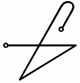

Ve Yaşlıların İşareti budur:

Onu her zaman taşımalısın, ENKI’nın Majisinin Gücü olarak. Ve sana bütün bunları daha önce de söylemiştim, ama yine söylüyorum, her türlü Zırh ile donanmış ve silahlanmış Rahip, Tanrıçaya benzerdir.
Çağrı Yeri, tercihen Dağların yüksek yerlerinde veya Denize yakın yerlerde veya İnsan düşüncesinden uzakta tenha bir yerde veya çölde veya kadim tapınağın tepesinde olmalıdır. Ve temiz ve istenmeyen şeylerden bağımsız olmalıdır. Böylece, Yer, bir kez seçildi mi burayı Tanrı ve Tanrıçana yalvarmakla ve çam ve sedirden kurbanlıkları yakmakla arındıracaksın. Değirmi bir somun ve tuz getirilmeli. Ve Rahip bunları kişisel ilahlara sunarken vakurca aşağıdaki defetmeyi telaffuz etmeli ki, Çağrı Yeri temizlensin ve bütün Kötülük bertaraf edilsin ve Rahip bu defetmenin bir tek kelimesi ya da harfini değiştirmeyecek, ama onu inançla yazıldığı şekliyle ezberden okuyacak:
ENU SHUB
AM GIG ABSU
KISH EGIGGA
GAR SHAG DA SISIE AMARDA YA
DINGIR UD KALAMA SINIKU
DINGIR NINAB GUYU NEXRRANIKU
GA YA SHU SHAGMUKU TU!
Ve Ekmek bronz Çağrı mangalında yakılacak ve Tuz odanın etrafına altmış kez serpilecek.
Ve yere, ERESHKIGAL’ın EGURRA’sından gelen görülmez canavarlar tarafından, Kudüs’teki bir halk meydanında Rahip ABDUL BEN-MARTU’ya olduğu gibi, öldürülmemek için, sınırlarından dışarı çıkmamaya da özen göstererek, açıklanan yakarıları ezberden okurken duracağın yerin ortasına, Çağrının kutsal MANDALA’sı, bir Daire çizilmeli.
Ve Daire kireç veya arpa veya beyaz unla çizilmeli. INANNA’nın Çağrısındaki Hançerle yere kazılmalı. Veya kıymetli ipek veya pahalı kumaşlar üzerine nakşedilmeli.
Ve oradaki renkler yalnızca siyah ve beyaz olmalı, başkası değil.
Ve Çağrı Alınlığı ve Çağrı Sancakları güzel kumaşlardan ve NINIB ve INANNA’nın renklerinde olmalıdır, yani Siyah ve Beyaz, çünkü NINIB Dış Bölgeleri ve Kadimlerin yollarını bilir ve INANNA Yeraltını baskı altında tutar ve oradaki Kraliçeyi yenmiştir.
Ve Çağrı Tacı Yaşlı Tanrıların Sekiz-Işınlı Yıldızını taşımalıdır ve kıymetli taşlarla süslenmiş, dövülmüş bakırdan olmalıdır.
Ve yanında lacivert taşından (lapis lazuli) bir Çubuk taşımalısın, boynunda Beş-Işınlı Yıldız, Alınlık, Kuşak, UR’un muskası kollarında ve halis ve lekesiz bir Elbise giymelisin.
Ve bu eşyalar yalnızca Çağrı İşlemleri sırasında giyilmelidir ve diğer zamanlarda uzakta tutulmalı ve saklanmalıdır, böylelikle senin kendi gözlerin hariç hiçbir göz onları göremez. Tanrıların tapımına gelince, o, ülkendeki geleneğe göre değişir, ama Eski Rahipler ayinlerinde çıplak olurlardı.
Ve Daireyi çizeceksin. Tanrı ve Tanrıçanı çağıracaksın, ama, başka bir tanrının değil, MARDUK’un bir putunun hazır bulunmasının gerekeceği MARDUK’un Güçlerini çağırma durumu olmadıkça, onların Putları sunaktan kaldırılmalı ve uzağa konmalıdır. Ve kokular, Ateş Çağrısından sonra, bu Kitabın herhangi bir yerinde açıklandığı gibi mangalda yakılmalıdır. Ve Gözcü, Onun tarzında, çağrılmalıdır. Ve senin etrafında ve MANDALA çemberindeki Dört Gözetleme Kulesi olan ve Ayinlere Şahitlik eden ve Kadimler sana sorun çıkarmasın diye Dışarıyı Gözetleyen Dört Kapı çağrılmalıdır.
Ve Dört Kapının Çağrılışı yüksek ve berrak bir sesle ezberden söyleyeceğin şu usulde olmalıdır:
KÜRELER ARASINDA BULUNAN, DÜNYADAKİ DÖRT KAPININ YAKARISI
Kuzey Kapısının Yakarısı
Seni Çağırıyorum, Kutsal UR Şehrinin Gümüş Avcısı!
En Kutsal Mandalanın Kuzeyini, DRA Prensliklerinden gelen, Alevin iğrenç savaşçılarına karşı koruman için seni çağrıyorum!
Tetikte ol TIAMAT’ın UTUKKI’sine karşı
ISHNIGARRAB’ın Zalimlerine
AZAG-THOTH’un Tahtına karşı!
ABSU’nun hayaletlerinden önce çek Yayını
Bırak okunu ARRA’nın sevgilisini her yönden ve her yerinden kuşatan Karanlık Melek Sürüleri üzerine.
Gözetleyici ol, Kuzey Yollarının Tanrısı.
Hatırla bizi, Anavatanımızın Kralı, Her Savaşın Galibi, Her Düşmanın Fatihi.
Gör ışıklarımızı ve duy Müjdelerimizi ve yüzüstü bırakma bizi.
Kuzeyin Ruhu, Hatırla!
Doğu Kapısının Yakarısı
Seni çağırıyorum, Yükselen Yıldızın Sahibesi.
Majinin, MASHU Dağlarının Kraliçesi!
Seni Çağırıyorum bugün En Kutsal Mandalayı Yedi Tuzakçıya, Yedi Yatarlara, kötü maksime, Kötü Tanrılara karşı koruman için!
Seni Çağırıyorum, Doğu Yollarının Kraliçesi, beni Ölümün Gözünden ve ENDUKUGGA ve NINDUKUGGA’nın kötü ışınlarından koru!
Gözetleyici ol, Doğu Yollarının Kraliçesi ve Hatırla!
Doğunun Ruhu, Hatırla!
Güney Kapısının Yakarısı
Seni Çağırıyorum, Melek, Korkunç Ölüm Şehri URULU’ya karşı Muhafızlık eden, Dönüşü olmayan Kapı!
Yanımda ol!
MARDUK ve ENKI’nin, Yaşlı Irkın Tanrılarının En Kudretli Güruhları Adına, ARRA, sağlam dur ardımda!
PAZUZU ve HUMWAVA’ya, Güneybatı Rüzgarlarının Hayaletlerine Karşı, sağlam dur!
Menfur Tanrılara Karşı, Sağlam dur!
Ardımdaki Gözler ol,
Ardımdaki Kılıç,
Ardımdaki Kargı,
Ardımdaki Zırh.
Gözetleyici ol, Güney Yollarının Ruhu ve Hatırla!
Güneyin Ruhu, Hatırla!
Batı Kapısının Yakarısı
Seni çağırıyorum, MER MARTU’nun Topraklarının Ruhu!
Seni çağırıyorum, Günbatımının Meleği!
Bilinmeyen Tanrıdan, koru beni!
Bilinmeyen Demondan, koru beni!
Bilinmeyen Düşmandan, koru beni!
Bilinmeyen Sihirden, koru beni!
KUTULU’nun Sularından, koru beni!
ERESHKIGAL’in gazabından, koru beni!
KINGU’nun Kılıçlarından, koru beni!
Kem Bakışlardan, Kem Sözlerden, Kem İsimden, Kem Sayıdan, Kem Şekilden koru beni!
Gözetleyici ol, Batı Yollarının Ruhu, Hatırla!
Batı Kapısının Ruhu, Hatırla!
Dört Kapının Yakarısı
MER SIDI!
MER KURRA!
MER URULU!
MER MARTU!
ZI DINGIR ANNA KANPA!
ZI DINGIR KIA KANPA!
UTUK XUL, TA ARDATA!
KUTULU, TA ATTALAKLA!
AZAG-THOTH, TA KALLA!
IA ANU! IA ENLIL! IA NNGI!
ZABAO!
Burada çeşitli Güçleri ve Ruhları çağırmanın özel birkaç büyülü sözü yer almaktadır. Aşağıdaki, Yaşamın Kraliçesi INANNA’nın Istırabın Krallığına İnişi sırasında kullandığı Büyülü Sözler olan, Başlangıç Sözlerinin kullanılmasını gerektirecek şekilde Ölmüş ve ABSU’da ikamet eden ve o suretle ERESHKIGAL’in hizmetkarı olan birinin Hayaletiyle konuşmayı arzu eden Ölülerle Konuşma Sanatının Kelimeleri burada kullanılabilir. Korku saçan Çukura inen Yedi Basamağa götüren Ganzirin Kapısını Açma sözlerinden daha etkisiz değildir bunlar. Bu yüzden, Açılma ile birlikte belirecek görüntü ve seslerden dolayı korkuya kapılma, çünkü bunlar oraya zincirlenmiş Gölgelerin iniltileri ve ağıtları ve Karanlığın Tahtı üzerinde oturan Deli Tanrının feryatları olacaktır.
KAYIP CUTHA ŞEHRİNDE OTURAN ÖLÜLERİN RUHLARINI ÇAĞIRMA İŞLEMİNİN BAŞLANGIÇ YAKARISI.
BAAD ANGARRU!
NINNGHIZHIDDA!
Seni çağırıyorum, Derinlerin Yılanı!
Seni çağırıyorum, NINNGHIZHIDDA, Derinlerin Boynuzlu Yılanı!
Seni çağırıyorum, Derinlerin Tüylü Yılanı!
NINNGHIZHIDDA!
Aç!
Kapıyı Aç ki gireyim!
NINNGHIZHIDDA, Derinlerin Ruhu, Kapının Gözcüsü, Hatırla!
Baba Adına, ENKI, Firardan önce, Majisyenlerin Efendisi ve Tanrısı, Kapıyı Aç ki gireyim!
Aç, yoksa Kapıya saldırırım!
Aç, tahtalarını kırarım!
Aç, yoksa Duvarlara saldırırım!
Aç, yoksa var gücümle üzerine çullanırım!
Aç, yoksa Ölüyü kaldırır ve Yaşayanı yerim!
Aç, yoksa Ölüye Canlı üzerinde güç veririm!
Aç, yoksa Ölünün Sayısını Canlıdan fazla yaparım!
NINNGHIZHIDDA, Derinlerin Ruhu, Kapının Gözcüsü, Açıl!
Ölüler kalksın ve tütsüyü koklasın!
Ve davet edilen Ruh geldiğinde, Şeklinden dolayı ürkme ve ona bu sözleri söyle
UUG UDUUG UUGGA GISHTUGBI
ve daha alımlı bir görünüşe büründüğünü göreceksin ve ona sorduğun cevaplaması emredilen bütün soruları doğru olarak cevaplandıracaktır.
Ve şu hatırlatılmalıdır ki, sorular tatmin edici şekilde cevaplandıktan sonra Ruh geldiği yere geri gönderilmeli ve daha fazla alıkonulmamalı ve Ruhu özgürleştirmek için girişimde bulunulmamalıdır, çünkü bu Aktin ihlal edilmesi olur ve sana ve senin nesline en güçlü laneti getirir, bundan dolayı Ölülerin kemiklerini yerlerinden oynatmak veya topraktan çıkarmak kanunsuzdur. Ve Ruh bu kelimeler aracılığıyla geri gönderilebilir
BARRA UUG UDUUG UUGGA!
ve aniden gözden kaybolur ve dinlenme yerine geri döner. Eğer bir kerede gitmezse, bu kelimeleri bir kez daha ezberden oku ve sonrasında gidecektir.
Aşağıdaki, Bütün Güçlerin Yüce Çağrılışıdır, yalnızca aşırı gereklilik halinde veya sana sıkıntı veren veya MANDALA çevresinde senin bilmediğin sebeplerden, belki de Kadimlerin ajanı olmasından, dolayı şaşkınlık yaratan asi bir ruhu sakinleştirmek için kullanılmalıdır. Böylesi bir durumda, onu, Yukarı Dünyada ikamet etme Gücü elde etmeden önce geri göndermek için acele edilmelidir, çünkü bunlardan biri Dünya üzerinde varolduğu sürece, neredeyse artık kontrol edilmesi imkansız hale gelene kadar, Tanrılardan üstünlermiş gibi erk ve Güç kazanırlar.
Bu Yakarıyı kuvvetle ezberlemen gerekir: